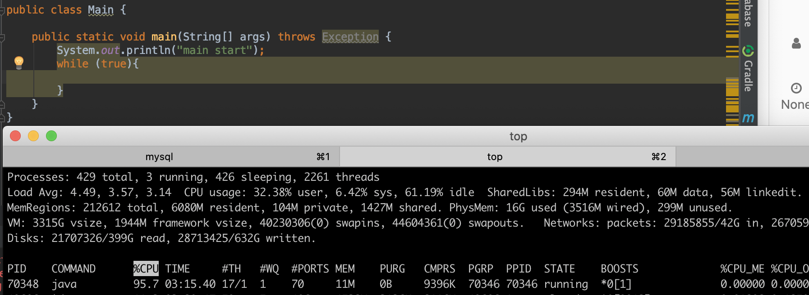
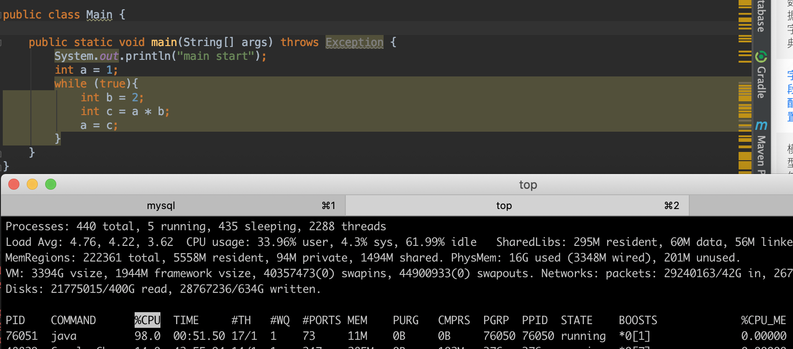
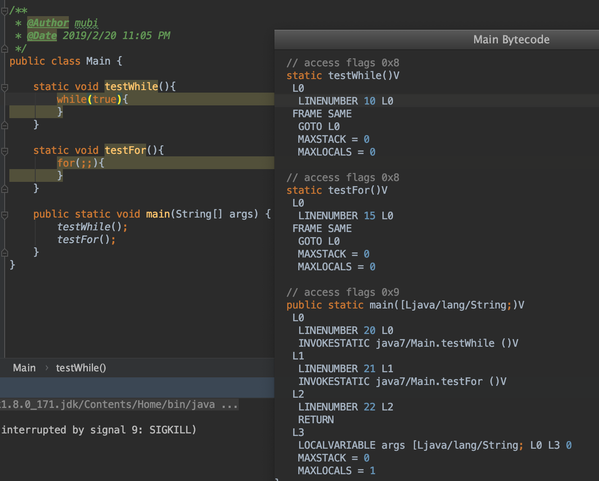
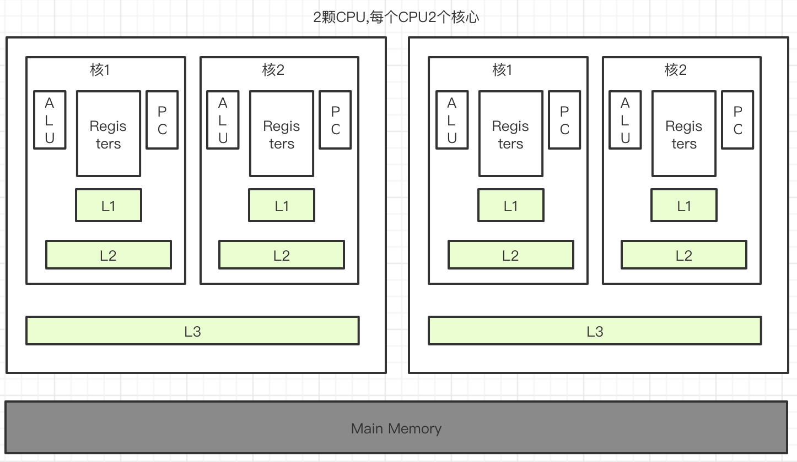
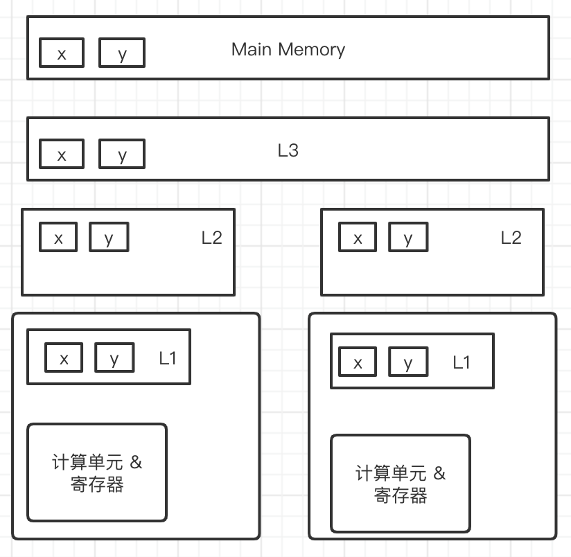

[TOC]
CPU while(true)
- while(true){}无任何操作，近乎占满一个CPU核


- while(true){sleep},基本不暂用CPU

- while(true)和for(;;)无差异

缓存一致性
计算机体系架构

CPU提速优化
CPU优化的两点
- 指令乱序执行（CPU执行更多的指令）
- CPU高速缓存（匹配速度慢的主存，也是能执行更多的指令）
cpu中为了能够让指令的执行尽可能地并行起来，从而发明了流水线技术。但是如果两条指令的前后存在依赖关系，比如数据依赖，控制依赖等，此时后一条语句就必需等到前一条指令完成后，才能开始。cpu为了提高流水线的运行效率，会做出比如：
- 对无依赖的前后指令做适当的乱序和调度；
- 对控制依赖的指令做分支预测；
- 对读取内存等的耗时操作，做提前预读；
- 等等。
这些都可能会导致指令乱序
指令乱序例子程序
public class Main {
static int x, y, a, b;
public static void main(String[] args) throws Exception{
int i = 0;
while (true) {
x = 0;
y = 0;
b = 0;
a = 0;
Thread A = new Thread(new Runnable() {
@Override
public void run() {
a = 1;
x = b;
}
});
Thread B = new Thread(new Runnable() {
@Override
public void run() {
b = 1;
y = a;
}
});
A.start();
B.start();
A.join();
B.join();
i++;
if(x == 0 && y == 0){
System.err.println(i + " " + x + " " + y);
break;
}
}
System.out.println("main end");
}
}
三级缓存

- L1高速缓存：也叫一级缓存。一般内置在内核旁边，是与CPU结合最为紧密的CPU缓存。一次访问只需要2~4个时钟周期
- L2高速缓存：也叫二级缓存。空间比L1缓存大，速度比L1缓存略慢。一次访问约需要10多个时钟周期
- L3高速缓存：也叫三级缓存。部分单CPU多核心的才会有的缓存，介于多核和内存之间。存储空间已达Mb级别，一次访问约需要数十个时钟周期。
当CPU要读取一个数据时，首先从L1缓存查找，命中则返回；若未命中，再从L2缓存中查找，如果还没有则从L3缓存查找（如果有L3缓存的话）。如果还是没有，则从内存中查找，并将读取到的数据逐级放入缓存。
eg:

MESI协议
多个处理器都涉及同一块主内存区域的更改时，将导致各自的缓存数据不一致？如何解决？
当某个cpu修改缓存行数据时，其它的cpu通过监听机制获悉共享缓存行的数据被修改，会使其共享缓存行失效。本cpu会将修改后的缓存行写回到主内存中。此时其它的cpu如果需要此缓存行共享数据，则从主内存中重新加载，并放入缓存，以此完成了缓存一致性。
总线锁和缓存锁
总线锁是把CPU和内存的通信给锁住了；使得在锁定期间，其它处理器不能操作内存的其它数据，这样开销较大
缓存锁不需锁定总线，只需要“锁定”被缓存的共享对象（实际为：缓存行）即可；接受到lock指令，通过缓存一致性协议，维护本处理器内部缓存和其它处理器缓存的一致性。相比总线锁，会提高cpu利用率。
缓存行 cache line
程序局部性原理（这里解释为：访问内存或缓存但某个位置，顺带但把紧邻的位置一起读取出来）
- 缓存行越大，局部性空间效率越高，但读取时间慢
- 缓存行越小，局部性空间效率越低，但读取时间快
折中取：64字节
消除伪共享
两个变量在一个缓存行中
import java.util.concurrent.CountDownLatch;
public class Main {
private static class T {
public volatile long x;
}
public static T[] arr = new T[2];
static {
arr[0] = new T();
arr[1] = new T();
}
// 一亿次
static int FOR_COUNT = 100_000_000;
public static void main(String[] args) throws Exception{
CountDownLatch latch = new CountDownLatch(2);
Thread t1 = new Thread(()->{
for (int i = 0; i < FOR_COUNT; i ++){
arr[0].x ++;
}
latch.countDown();
});
Thread t2 = new Thread(()->{
for (int i = 0; i < FOR_COUNT; i ++){
arr[1].x ++;
}
latch.countDown();
});
final long start = System.nanoTime();
t1.start();
t2.start();
latch.await();
System.out.println((System.nanoTime() - start) /1_000_000 + " ms");
}
}
程序输出：2990 ms,2952 ms,2490 ms，大概3秒左右
消除伪共享
import java.util.concurrent.CountDownLatch;
public class Main {
private static class T {
public volatile long p1, p2, p3, p4, p5, p6, p7;
public volatile long x;
public volatile long p8, p9, p10, p11, p12, p13, p14;
}
public static T[] arr = new T[2];
static {
arr[0] = new T();
arr[1] = new T();
}
// 一亿次
static int FOR_COUNT = 100_000_000;
public static void main(String[] args) throws Exception{
CountDownLatch latch = new CountDownLatch(2);
Thread t1 = new Thread(()->{
for (int i = 0; i < FOR_COUNT; i ++){
arr[0].x ++;
}
latch.countDown();
});
Thread t2 = new Thread(()->{
for (int i = 0; i < FOR_COUNT; i ++){
arr[1].x ++;
}
latch.countDown();
});
final long start = System.nanoTime();
t1.start();
t2.start();
latch.await();
System.out.println((System.nanoTime() - start) /1_000_000 + " ms");
}
}
程序输出：900 ms,894 ms,1189 ms，1秒多
原因
private static class T {
public volatile long p1, p2, p3, p4, p5, p6, p7;
public volatile long x;
public volatile long p8, p9, p10, p11, p12, p13, p14;
}
数组如下，arr[0].x 与 arr[1].x 不会在一个缓存行中；这样修改用的各自的缓存行，互不影响
56字节
x(8字节)
56字节
56字节
x(8字节)
56字节
配合import sun.misc.Contended;的@Contended注解(注意加上-XX:-RestrictContended参数)